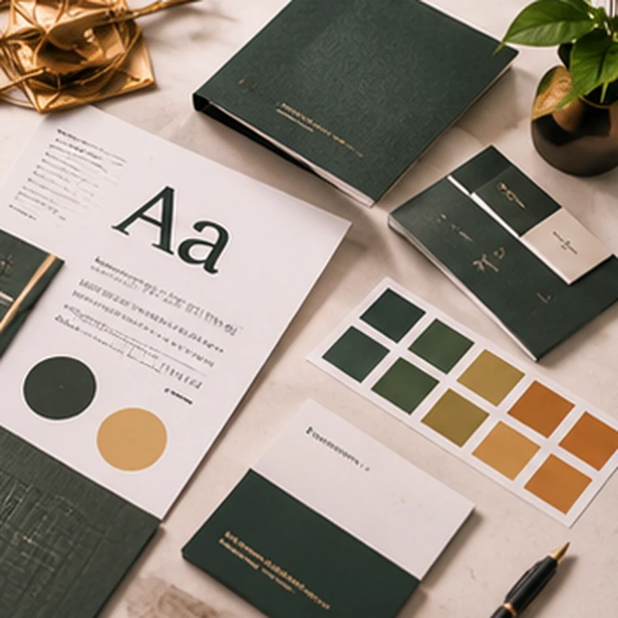
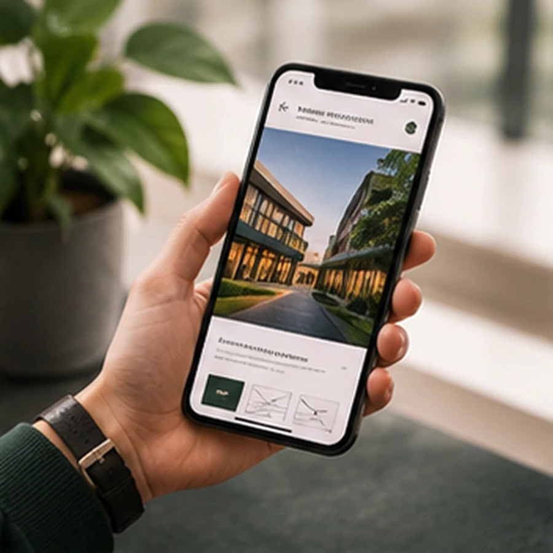
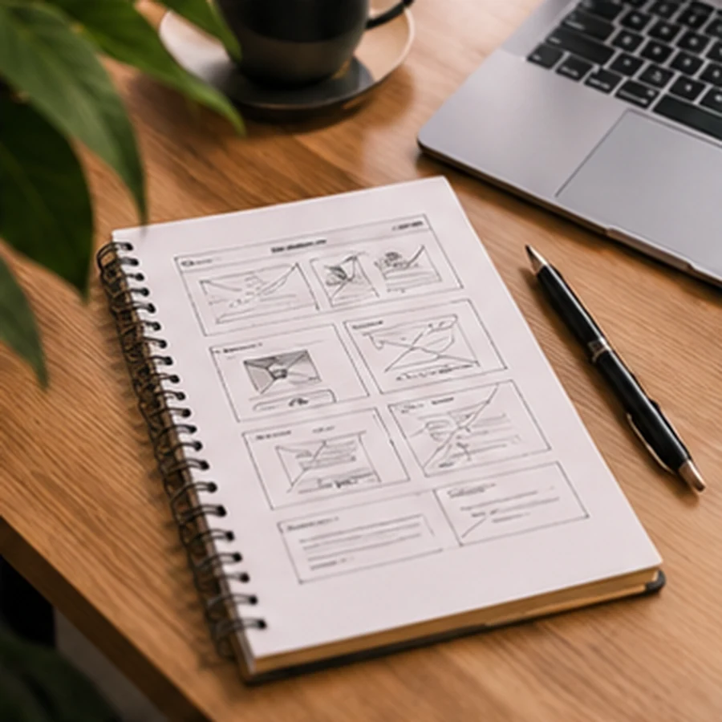
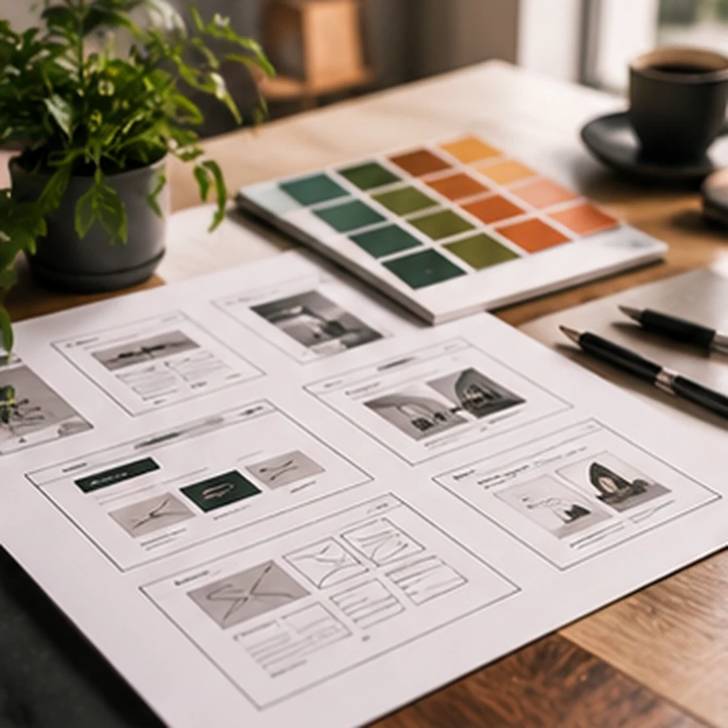
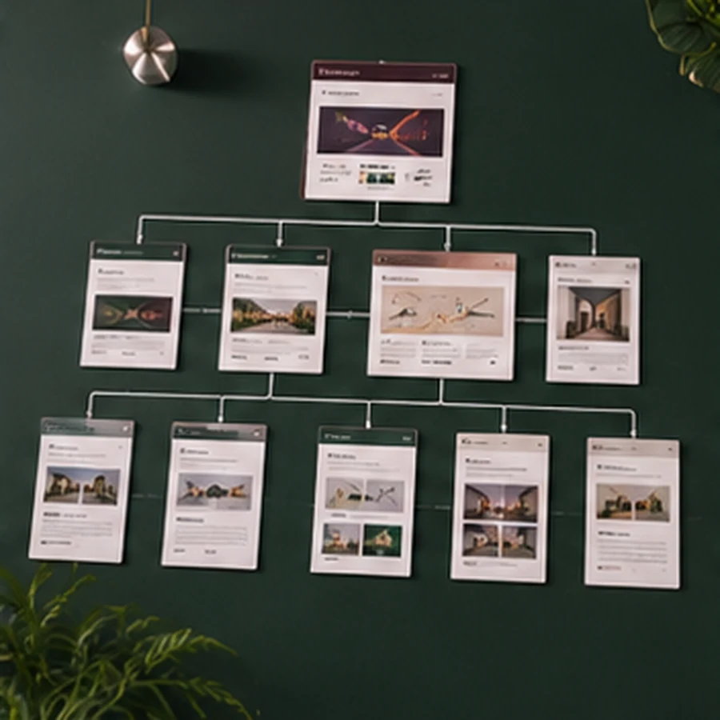
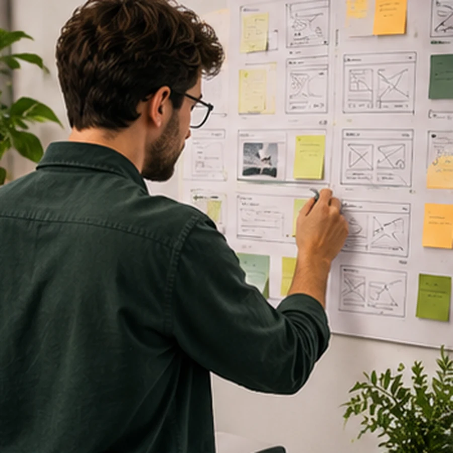

- Home
- Insights
Insights & Ideas
Practical thinking on web design, UX, development and growing a business online.
What Makes a Website Truly Professional?
Professionalism is less about decoration and more about clarity, consistency and care.
Read articleWhat Makes a Website Truly Professional?
Professionalism is less about decoration and more about clarity, consistency and care.
Read article
The Principles of Modern Web Design
Six durable principles that guide good layouts, whatever the trend of the year.
Read article
Why Mobile-First Design Matters
Starting from the smallest screen forces better decisions about content.
Read article
How Much Should a Business Website Cost?
What drives the price of a website, and how to compare quotes fairly.
Read article
Understanding UI and UX
They are related but different: one is how it looks, the other is how it works.
Read article
Website Design Mistakes to Avoid
Seven problems that quietly cost businesses enquiries.
Read article
Designing Better Landing Pages
A landing page works when it asks for one thing and removes distractions.
Read articleE-commerce User Experience
How product pages, search and checkout shape whether people buy.
Read articleWebsite Performance and Speed
Speed is part of the experience, and most gains come from basics.
Read article
Choosing the Right Website Structure
One page, a few pages or a full site: how to decide.
Read article
When Should You Redesign Your Website?
Signs that a refresh is worth the effort, and signs it is not.
Read articleEssential Features of a Business Website
The practical features almost every business site should include.
Read articleNo articles match your search.